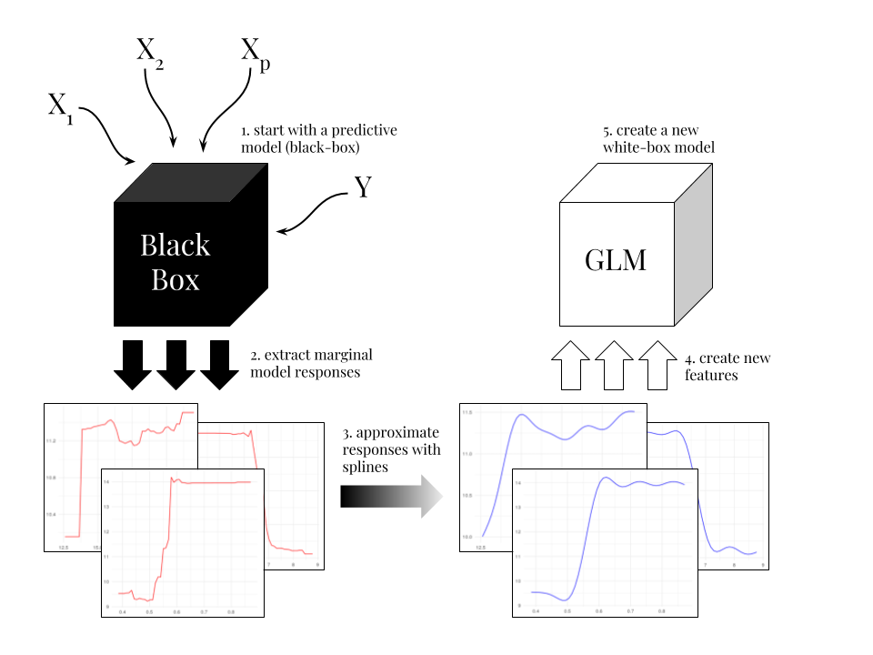

Overview
The xspliner package is a collection of tools for training interpretable surrogate ML models.
The package helps to build simple, interpretable models that inherits informations provided by more complicated ones - resulting model may be treated as explanation of provided black box, that was supplied prior to the algorithm. Provided functionality offers graphical and statistical evaluation both for overall model and its components.
Key functions:
-
xspline()ormodel_surrogate_xspliner()for training surrogate model, -
plot_model_comparison()orplotgeneric for visual predictions comparison of surrogate and original ML model, -
plot_variable_transition()orplotgeneric for graphical presentation of variables profiles and related information, -
summary()for statistical comparison of surrogate and original ML models, -
print()for getting details about surrogate model components.
The approach that stands behind surrogate model construction offered by xspliner sums up below graphics:

More details can be found in xspliner’s page.